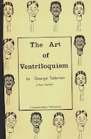

Mimicry
2/3/2011
By George Tollerton
Although Mimicry is not ventriloquism in the strict sense of the word, it can prove a very useful adjunct for encore work in your ordinary "act". You have no mechanical aid when you perform this type of act - such as having a dummy in the ventriloquism act - and so, apart from true and faithful reproduction, its success depends largely upon showmanship.
Go direct to nature and listen to the birds and animals in their natural state. You could start with ordinary domestic animals, or maybe make a visit to the zoo. The study you have made of ventriloquism will prove very useful. With the knowledge and secrets you have acquired you will be able, not only to imitate the sounds made by various animals, but also give "distant" imitation of them. For instance, in giving an imitation of a puppy which has been trodden on, you can follow it up by as illustration of him yelping away into the distance.
Do not put a strain upon the imagination of your listeners. This would not only be a waste of time, but would also lower your prestige - and that is the most drastic thing that could happen to an entertainer. However, you will find it really surprising what can be imitated with the human voice.
A Cock crowing, Duck quack, Cat meow, Sawing Wood, Cow, Donkey, Lion, Dog, Pig, Horse, (and more.)
* * * * *
Condensed from The Art of Ventriloquism by George Tollerton of New Zealand. This book is a gift of George Boosey for today's drawing. The winner is: The Dale Scott family.
Although Mimicry is not ventriloquism in the strict sense of the word, it can prove a very useful adjunct for encore work in your ordinary "act". You have no mechanical aid when you perform this type of act - such as having a dummy in the ventriloquism act - and so, apart from true and faithful reproduction, its success depends largely upon showmanship.
Go direct to nature and listen to the birds and animals in their natural state. You could start with ordinary domestic animals, or maybe make a visit to the zoo. The study you have made of ventriloquism will prove very useful. With the knowledge and secrets you have acquired you will be able, not only to imitate the sounds made by various animals, but also give "distant" imitation of them. For instance, in giving an imitation of a puppy which has been trodden on, you can follow it up by as illustration of him yelping away into the distance.
Do not put a strain upon the imagination of your listeners. This would not only be a waste of time, but would also lower your prestige - and that is the most drastic thing that could happen to an entertainer. However, you will find it really surprising what can be imitated with the human voice.
{kind=link}

A Cock crowing, Duck quack, Cat meow, Sawing Wood, Cow, Donkey, Lion, Dog, Pig, Horse, (and more.)
* * * * *
Condensed from The Art of Ventriloquism by George Tollerton of New Zealand. This book is a gift of George Boosey for today's drawing. The winner is: The Dale Scott family.